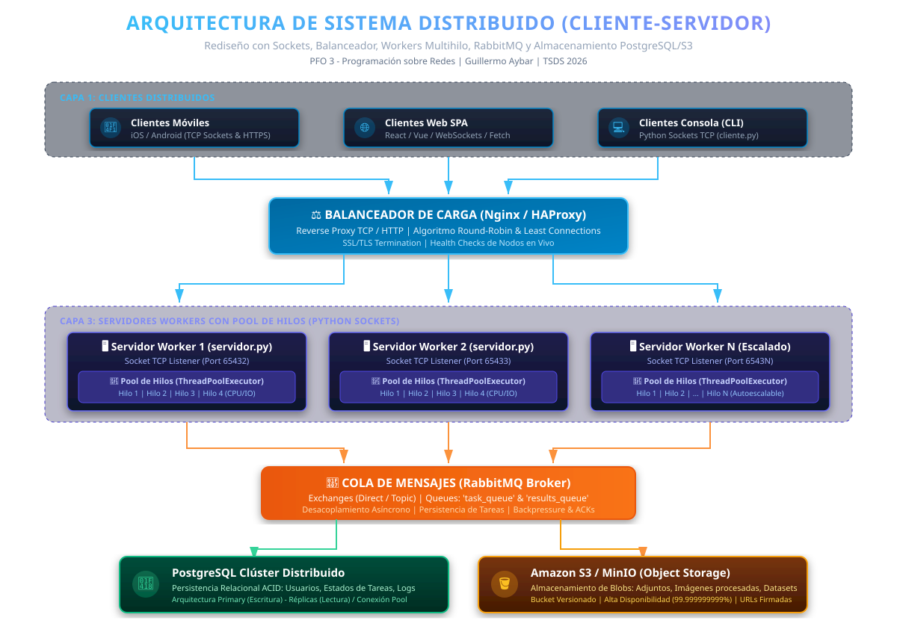

Transformación integral del sistema hacia un esquema de alta disponibilidad, concurrencia masiva y desacoplamiento mediante balanceo de carga, clúster de workers multihilo, mensajería asíncrona y persistencia particionada:

Aplicaciones móviles (Android/iOS), aplicaciones web modernas (SPA) y clientes en consola por TCP (cliente.py). Se comunican bajo protocolos de red estandarizados sin conocer la topología interna.
Punto de entrada único (Single Point of Contact). Aplica algoritmos de balanceo (Round-Robin, Least Connections), terminación TLS/SSL y comprobaciones de estado de salud (health checks).
Nodos de servicio implementados en Python (servidor.py) con ThreadPoolExecutor. Desacoplan la recepción del socket del procesamiento intensivo (CPU/IO bound), ejecutando tareas concurrentes.
Broker AMQP para comunicación asíncrona inter-servidor. Garantiza entrega garantizada (ACKs), resiliencia ante picos de demanda (backpressure) y desacoplamiento temporal.
PostgreSQL: Clúster relacional para transacciones ACID y metadatos de tareas.
Amazon S3: Almacenamiento distribuido de objetos masivos (imágenes, adjuntos, backups) con 99.999999999% de durabilidad.
Interactúe en tiempo real con la simulación del clúster de workers. Observe cómo las peticiones distribuyen la carga entre los hilos del pool:
servidor.py)SO_REUSEADDR).concurrent.futures.ThreadPoolExecutor.threading.Lock.cliente.py)--auto).